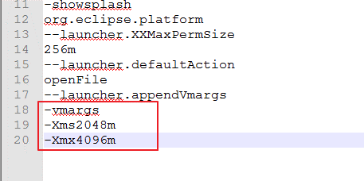

Eclipse memory settings
Eclipse memory allocation is defined in eclipse.ini file in eclipse folder by Xms and Xmx parameters.
By default Eclipse is configured to run on system with 2GB of memory, in case of stronger systems it is advised to increase Xms and Xmx to respectful levels.
